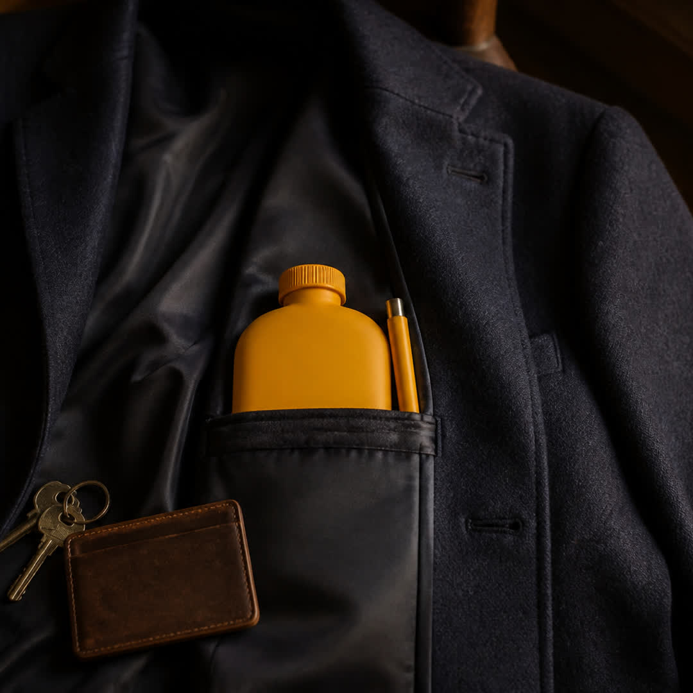

Your lota. Finally fits in a jacket.
$19.99Ships from pocketlota.com
A lota is a bottle you fill and pour after you use the bathroom. Most of them are the size of a thermos. This one parks the pipe in a track on the face, so the bottle stays pocket-thin when you are done.
How the pipe works
Water goes in the neck on top. Screw the cap back on.
Thumb the ridged slider. The pipe rides a T-slot until the ports line up. It cannot pull off the bottle.
Tip it. A 2.4 mm jet sends a thin stream out the beak, not a splash.
Slide the pipe back flush with the face. The whole thing goes in a jacket pocket.

Why it exists
A hose bidet needs a tap. A squeeze bottle leaks and looks like toiletry. A classic lota does the job and then sits on the tank because it will not fit anywhere else. Pocket Lota is the same pour, cut down so you can carry it.
The bottle
- Size
- About 78 × 46 × 150 mm with the pipe stowed
- Hold
- About 500 ml
- Jet
- 2.4 mm through the beak
- Fill
- 26 mm neck on top, with a cap
- Pipe
- Rides a T-slot on the face. Stow flush, slide up to pour